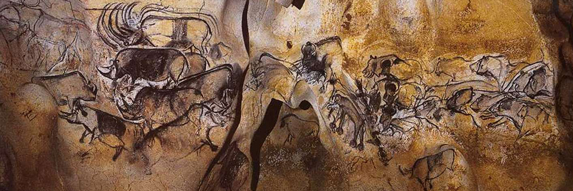
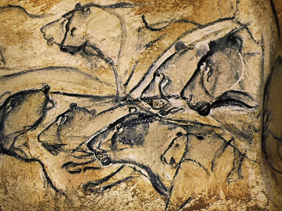
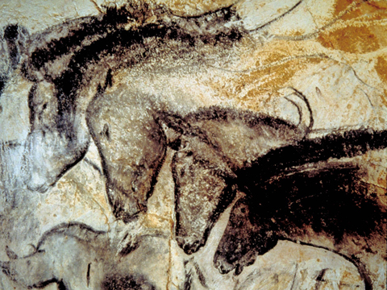
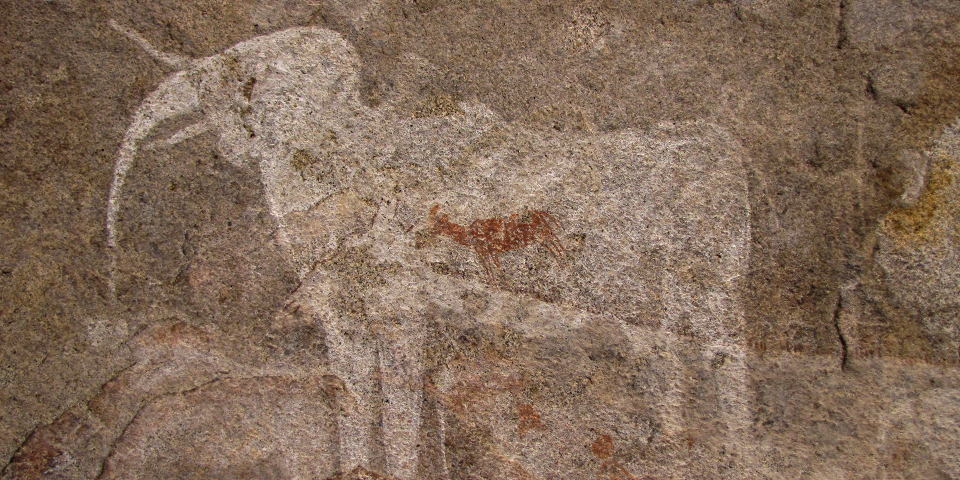
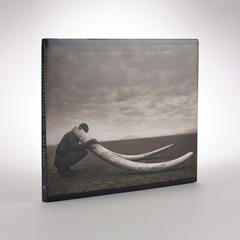
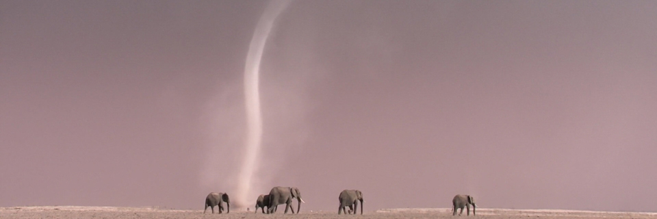

September, 2014
Inspiration Ch. 1: Wildlife
Dane Aleksander, animator at Animat Habitat™
In the development of White Elephant — a comic book, an app and an invitation to change the way we look at wildlife, this article introduces the project through the influences on its art and story. In storytelling, like in design, we communicate with imagery that is familiar, symbolic and even iconic to drive focus to specific details that communicate a unique visual tone. Here are some of the artworks and the artists that have championed the culture and design of wildlife art.

Chauvet-Pont-d’Arc Cave, 30,000-32,000 BP
Wildlife in Art History
Look way back to the beginnings of visual storytelling — to cave art that is as aesthetically textured as it is rich with historical implication — to the most pertinent example: the Chauvet-Pont-d’Arc Cave, “located in a limestone plateau of the Ardèche River in southern France.” The decorated cave, above and below, “contains the earliest known and best preserved figurative cave paintings in the world,” around thirty thousand years old, “they demonstrate a range of techniques including the skillful use of colour, the combinations of paint and engraving, anatomical precision, three-dimensionality and movement.”
“From the earliest days, [humans have] tried to capture in drawings the living quality of the creatures around [them]. [&elipse;] For some presumptuous reason, [we feel] the need to create something of [our] own that appears to be living, that has an inner strength, a vitality, a separate identity — something that speaks out with authority — a creation that gives the illusion of life. Twenty-five thousand years ago, in the caves of southwestern Europe, [the early modern humans] made astounding drawings of the animals [they] hunted. [The] representations are not only accurate and beautifully drawn, but many seem to have an inner life combined with a suggestion of movement.” — Frank Thomas and Ollie Johnston. (1981) The Illusion of Life: Disney Animation, p. 13. Walt Disney Publications.


A second and topical example: Phillipp’s Cave a white elephant painted more than five thousand years ago. There – in Namibia, “the Erongo Mountains offer a reliable water supply, thanks to impermeable granite pans, which are filled during the rainy season” and have historically allowed for rich wildlife. The white elephant, below, is among numerous rock paintings in the Erongo Mountains that tell of ancestors of the indigenous people of Southern Africa, and their ancient lives among animals.

Phillipp’s Cave, 3,200-3,500 BCE
_September_2015-1.jpg)
Relief is another technique as old as human artistic exploration. Some of the earliest known bas-reliefs are also found on cave walls. Later, bas-reliefs are found on the surfaces of stone buildings constructed by ancient Egyptians and Assyrians and so on during the civilizations of the ancient world (c.3,500-600 BCE). Even in ancient Greece, reliefs appear more like contracted sculptures than expanded pictures. The figures inhabit a space that is defined by the form of the figures themselves and is limited by the background plane. This background plane is not used to create a receding perspective but rather as a finite impenetrable barrier in front of which the figures exist.
In ancient Rome, a particular example of relief art — a triumphal monument of the Roman emperor Marcus Ulpius Traianus Crinitus: Trajan’s Column (106-113 CE) then had a significant impact on late Roman architecture and sculpture. Its bas-relief sculpture is in the form of an engraved band – 625 feet in length, and 4 feet in height – that spirals upward, around the column, in a continuous narrative of Trajan's military campaigns. Its spiral narrative holds more than one hundred and fifty scenes with more than two thousand five hundred figures, all sculpted in low-relief, including sixty images of the emperor. The scenes include specific events from the Dacian campaigns, and yet most scenes depict the day-to-day activities of the Roman legionaries. This provides an illustration of the ancient Roman military equipment, techniques and weaponry set against a flat relief background with an occasional suggestion of a town: houses, walls, and bridges and so on. The architecture of the helical stairway inside the column in particular spread throughout the empire, but this sculpture is of particular note here for its unique application of visual storytelling. While its construction may seem impractical in relation to making a comic book today, Trajan's Column showcased a similar capacity to tell an epic story nearly two thousand years earlier.
Wildlife through a Lens
Nature is a wonder. Our perception from within the woods differs in appearance from a picture that is chosen however to represent what may be seen and felt in among the trees. The wildlife artists – painters and photographers – with pictures and motion-pictures celebrated in culture have defined for many the picturesque wonder of the natural world. The African wildernesses are almost inherently iconic, and with good reason the Namibian desert landscape has predominantly influenced the visual tone of White Elephant. The key art for White Elephant takes a look at visual reference through the lens of artists who have given glimpses of our wild world as never before seen, with admiration for those working to raise the public consciousness about the value of the natural world. Through expression of value in those things that are vanishing, the art of Robert Bateman has set the example for projects at Animat Habitat™. In his book, An Artist in Nature (1990), Bateman expresses the realization, “that we are living in a disappearing world,” that his art, “hearkens back to a distant, mythical age when the world was a Garden of Eden and animals.”
“Bateman’s paintings are what the outdoors is all about, what wildlife art should be.” — San Francisco Chronicle
He has come to believe that every living thing is a unique individual. Bateman says he knows some lions so well, “that when [he sees] them on TV [he recognizes] them.”
“Every bald eagle’s face […] has its own individuality. It only stands to reason that every zebra stripe is different, every fingerprint, every snowflake is different, unique. […] If we started thinking about the planet earth in this way and paying attention to the particularity of the different species and the different races, we would probably have a different attitude toward wiping things out.” — Robert Bateman. …
Similarly, the photography of Nick Brandt has documented the disappearing of the natural world. Brandt's focus has been the animals of East Africa, with the vision, “to create an elegy, a likely last testament to an extraordinary, beautiful natural world”, which manifested in a trilogy of books with the full title: On This Earth, A Shadow Falls Across The Ravaged Land. The last of the trilogy — Across The Ravaged Land is a treasured reference work and motivational resource for White Elephant.

Across the Ravaged Land (2013) © Nick Brandt
In the book, Brandt shares a stark portrayal of animals, which offers a poignant look at the tragedy for African ecosystems. He describes the choice to photograph in black-and-white as not purely aesthetic, “it accentuates the impression of the images belonging to another, much earlier time […] already long gone.”
“[…] there is a continent-wide apocalypse of all animal life occurring across Africa. When you fly over such a vast continent with so much wilderness, it’s hard to imagine that there’s not enough room for both animal and man. But between an insatiable demand from other countries for animal parts and natural resources and a skyrocketing human population, the animals are being relentlessly squeezed out and hunted down. There is no park or reserve big enough for the animals to live out their lives safely.” — Nick Brandt. (2013) Across The Ravaged Land, p. 7. Abrams.
The hope is simply to share the message of wildlife conservation — to share White Elephant with a generation that has been exposed to wildlife through images on a screen – more often than not – in concert with the narration of Sir David Attenborough, legendary face and voice of BBC nature documentaries. The BBC Natural History Unit have documented invaluable visual archives of our planet on film, and in so doing have defined a high-standard for cinematography in nature and otherwise. The art direction of White Elephant has taken cues from how elephants have been pictured throughout visual storytelling, in particular in the “Deserts” and “Great Plains” episodes of Planet Earth (2006), the “Mammals” episode of Life (2009), and the “Kalahari” and “Savannah” episodes of Africa (2013). As well, for a wildlife animator looking for reference footage, there may be no better place to start than the BBC Motion Gallery.

Africa (2013), e/2 “Savannah” © BBC Natural History Unit
This article was edited September, 2019.
Continue to Chapter 2: Daydreams.
Behind the scenes:
Register for membership behind the scenes of White Elephant.